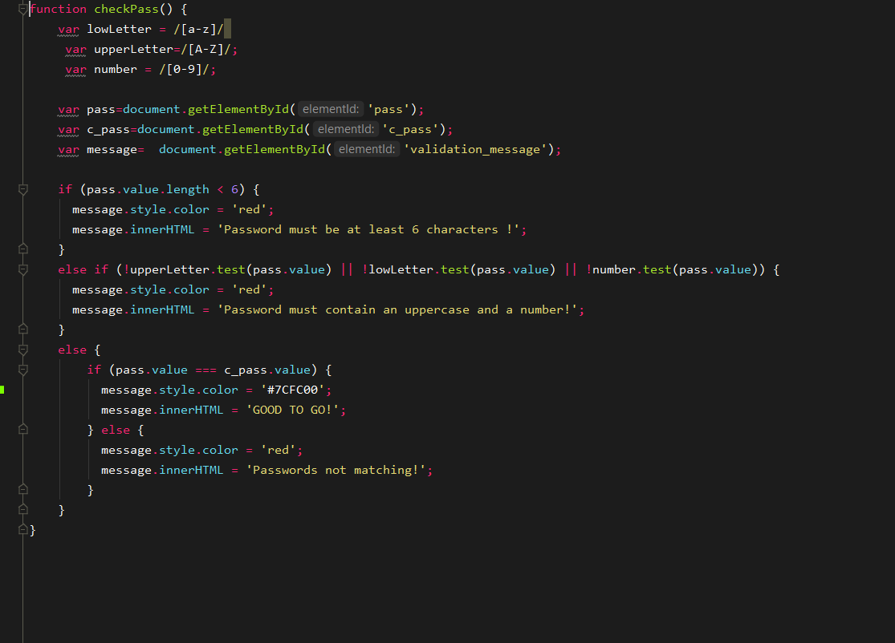

Abstract
Acest documente contine detalii legate de procesul de creare a aplicatiei web TraST
Introduction
TraST - Traffic Signs Tutor Traffic Signs Tutor este un site web care faciliteaza procesul de invatare a semnelor rutiere si a regulilor de circulatie din Romania. Pentru a realiza acest lucru va oferi lectii si chestionare/grile pentru a va testa cunostiintele.
Etapa Preliminara
In cadrul acestei etape, s-au analizat cerintele proiectului si a fost conceputa o structura initiala a Interfatei web a aplicatie, care continea HomePage,Learn,Test,Sign Up si Log In, ca pagini principale (de baza) ce vor intra in interactiunea utilizatorului.
Prima etapa
Dupa crearea paginilor principale ale aplicatie web, in HTML5 si CSS3, la o analiza mai detaliata a continutului ce trebuie regasit in cadrul aplicatiei s-au creat pagini aditionale, pentru organizarea si afisarea continuturilor sectiunilor "Reguli de circulatie" si "Semne de circulatie".
Subdiviziunile fiecarei sectiuni in parte urmeaza acelasi "sablon" - organizare a datelor/informatiilor in fisiere html
Sectiunea "Reguli de circulatie"
html sample pentru una dintre subdiviziuni
realizarea sectiunilor expandate s-a realizat cu JavaScript pe baza de event listener
code js
Sectiunea "Semne de circulatie"
html sample pentru una dintre subdiviziuni
A doua etapa
Aceasta s-a desfasurat in paralel cu prima etapa si a cuprins realizarea formularelor de sign up si log in, precum si finisarea paginii de home.
Structura celor 2 fromulare este asemanatoare.Intr-o prima etapa formularul de sign up continea doar 3 campuri:Username,Email,Password, dar apoi s-a revenit asupra acestuia adaugandu-se si un Confirm Password, precum si adaugarea unor criterii pentru campul parola(min 6 caracter, un uppercase ,un lowercase si un numar.Respectarea criteriilor si a compatibilitatii celor 2 parole se realizeaza prin intermediul unei functii de JavasScript.
varianta finala a formularului de sign up
html sample
codul javascript

Pagina Home initiala continea doar scheletul(HTML5+CSS),iar ulterior s-a reveint asupra acesteia pentru afisarea unui top valid si a adaugarii posibilitati de descarcare a documentului ce contine date RSS ale acestuia.(acest lucru este posibil doar pentru utilizatori care au cont si sunt conectati,afisarea acestuia depinde de variabile setarile existente in $_SESSION care sunt modificate in functie de continut curent al bazei de date
code sample
A treia etapa
Aceasta etapa a fost reprezentata de realizarea testelor de evaluare a cunostintelor.Acestea au la baza acelasi "schelet" html si cod de baza pentru popularea testului,verificarea raspunsului, calcularea punctajului in Javascript, dar difera prin continutul intrebarile ,care regasesc in format JSON.
Exemplu test
html code sample
code js
A patra etapa
Aceasta etapa a fost reprezentata de realizarea testelor de evaluare a cunostintelor.Acestea au la baza acelasi "schelet" html si cod de baza pentru popularea testului,verificarea raspunsului, calcularea punctajului in Javascript, dar difera prin continutul intrebarile ,care regasesc in format JSON.
Exemplu test
html code sample
code js
A cincea etapa
Aceasta etapa a constat in crearea bazei de date ce se alfa in spatele aplicatiei web, precum si realizarea partii de backend, ce se ocupa de toate modificarile necesare aplicatiei si bazei de date pe baza utilizatorilor acesteia.
Baza de date [MySql] - ce contine tabele utilizate pentru informatiile utilizatorilor si pentru contorizarea progresului acesteia
Functii care se ocupa de acesarile directe la baza de date se regasesc in fisierul config.php
Functii care prelua datele de la utilizator prin metode POST/GET se regasesc in folderul Auth
Observatii
In cadrul fiecarei etape s-a revenit asupra 'codului' html si surselor css, pentru a se asigura corectitudinea lor.Totodata, s-a revenit asupra design-ului unde era necesar si la fiecare adaugare de noi elemente in cadrul intefetei s-a revizuit design pentru asigurarea caliatii sale responsive.
Un exemplu cel mai bun pentru acesta obeservatie este creearea unui navbar separat pentru mobil
Bibliografie
Aceasta sectiune contine link-uri cu sursele la care s-a apelat cel mai frecvent pentru prevenirea/rezolvarea problemelor aparute.
https://css-tricks.com/the-checkbox-hack/#article-header-id-0 https://www.sitepoint.com/simple-javascript-quiz/?fbclid=IwAR2Y9SzPBxaG1WycF-1Zl5-dD9elFQDGm9zT5cn9xLXyYWh7AqXFk0VZxKY https://www.w3schools.com/html/default.asp https://www.w3schools.com/CSS/default.asp https://www.youtube.com/watch?v=NXAHkqiIepchttps://www.w3schools.com/php/php_mysql_select.asp https://www.w3schools.com/howto/tryit.asp?filename=tryhow_js_sidenav_dropdown https://www.carronmedia.com/create-an-rss-feed-with-php/